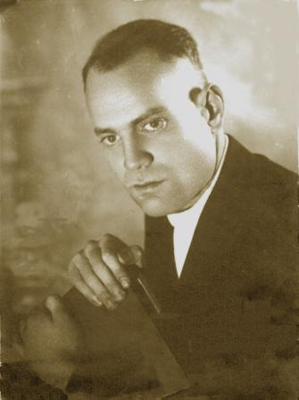

|
|

|
|
Месник Рафаил Абрамович
Родился 20 июля 1916 года в г.Коканд
Умер 9 сентября 1996 года. Похоронен: Санкт-Петербург, пос. Шушары.
Отец Месник Абрам Моисеевич
Мать Месник (Брауде) Бейла Пинхасовна
Жена Катюрина Мария Васильевна
Дочь Татьяна 1939 г.р.
Сын Леонид 1942 г.р.
Сын Владимир 1944 г.р.
Сын Михаил 1951 г.р.
В 1922 году поступил, а в 1931 году закончил 9-ти летнею школу с индустриальным уклоном им. К. Либкнехта. г. Коканд, Узбекской ССР.
В 1936 году закончил Ленинградский электротехнический опорный рабфак. Поступил на первый курс электротехнического института ( в то время как факультет Ленинградского индустриального (политехнического института) им. М. И. Калинина).
С 1937-39 учеба в Ленинградской школе среднего начсостава рабоче-крестьянской милиции. (Садовая дом 26)
С сентября 1939 г. — начальник 2-го, потом 1-го отделения, начальник 4-го отделения УНКВД по Вологодской области,
с декабря 1943 г. — начальник Вожегодского РО УНКВД по Вологодской области.
С января 1945 г. — начальник Алексеевского РО УНКВД по Воронежской области,
с июня 1949 г. — начальник Чигольского РО МВД Воронежской области,
с ноября 1950 г. по август 1956 — инспектор Чигольского района УМВД Воронежской области
С 1944 года майор.
С сентября 1956 года по февраль 1977 года председатель районной плановой комиссии Чигольского (до 1959 года) и Таловского районов Воронежской обл.
С 1958 по 1963 учеба на заочном отделении Саратовского экономического института (экономика сельского хозяйства)
С 1960 по 1976 год депутат Таловского районного Совета депутатов трудящихся (60 округ).
Награды:
Орден «Красной Звезды» №3210607 Указ президиума ВС СССР от 25 июня 1954 г.
Медаль «За боевые заслуги» №3155206 Указ президиума ВС СССР от 13 августа 1947 г.
Медаль «За победу над Германией в Великой Отечественной войне 1941-1945 гг.»
Юбилейные медали «20; 30; 40; 50-летия победы в Великой Отечественной войне 1941-1945 гг.»
|